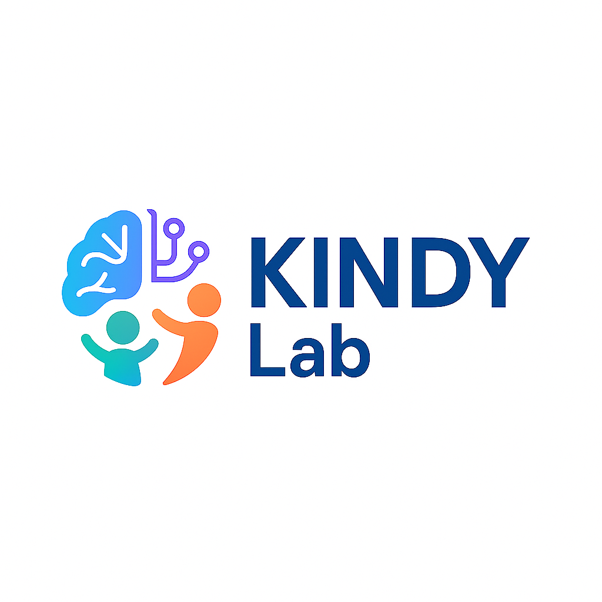

学前儿童家庭教育环境
与情绪引导方式调查问卷
香港中文大学（深圳）人文社科学院 KINDY Lab

香港中文大学（深圳）人文社科学院 KINDY Lab
尊敬的家长，您好！非常感谢您在百忙之中支持本项研究。本调查旨在了解您参与孩子日常教育的情况、您与幼儿园教师的沟通协作体验，以及您在面对孩子情绪变化时的真实回应。
您的参与将为我们探索更优质的家园共育模式、促进幼儿身心健康成长提供极具价值的参考。
整份问卷预计耗时 15-20 分钟。我们承诺对您提供的信息严格保密，数据分析前将剔除所有身份识别信息，研究报告也仅呈现群体性趋势而非个人数据。请您放心填写。
问卷选项不分对错，您的直观感受和真实做法对我们至关重要。
以下问题仅用于分组分析，不参与最终类型计算。请根据实际情况填写。
请根据近期的实际情况，回忆并评估您进行以下活动的频率。您通常多长时间做一次以下的活动？
以下部分旨在了解您与孩子班级教师之间的沟通、合作方式以及您对双方关系的真实感受。请您结合当前班级教师的实际互动情况作答。
最后一部分将关注您在面对孩子出现消极情绪（如生气、伤心、害怕等）时的真实回应方式。请阅读以下12个日常情境，并根据您的实际做法对每种回应方式的可能性进行评分。
* 家园关系维度为家长对师幼关系的感知，仅供参考，不参与类型判定